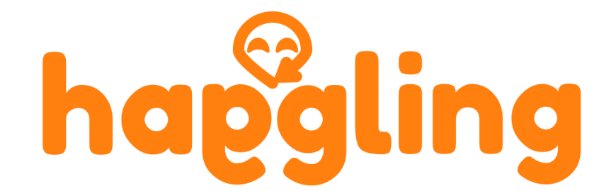

Conceptos de logo para empresa de subastas online haggling.
Fecha: 23/01/2019
Autor: Javier Gracián
Tecnologías usadas: Affinity Designer y Figma (Versión reducida y completa)

Concepto de logo para empresa de cosméticos GEA
Autor: Javier Gracián y colaboración con diseñador.
Tecnologías usadas: Boceto en papel del diseñador pasado a Affinity Designer
Fondo de youtube para T5, un equipo de esports.
Fecha: 23/07/2018
Autor: Javier Gracián
Tecnologías: Cinema4D y Photoshop
Fondo de youtube para usuario Kronz.
Fecha: 15/5/2018
Autor: Javier Gracián
Tecnologías usadas: Cinema4D, Lightroom y Photoshop
Otro fondo de youtube para el usuario Knox
Fecha: 02/09/2019
Autor: Javier Gracián
Tecnologías usadas: Photoshop e Illustrator